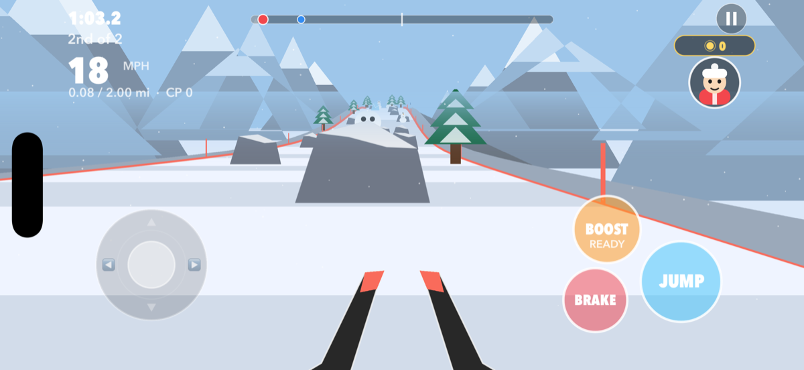
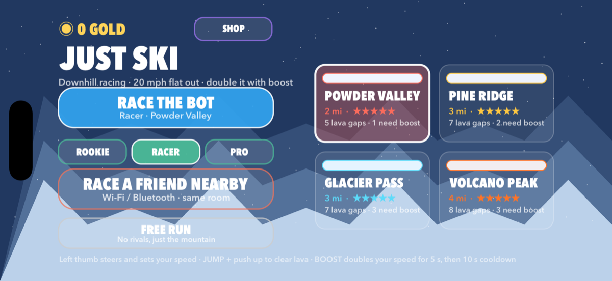
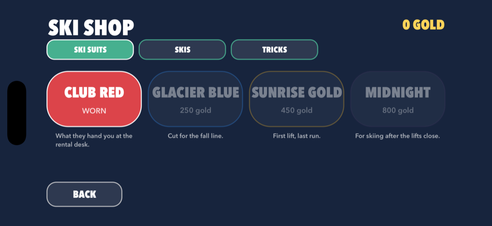
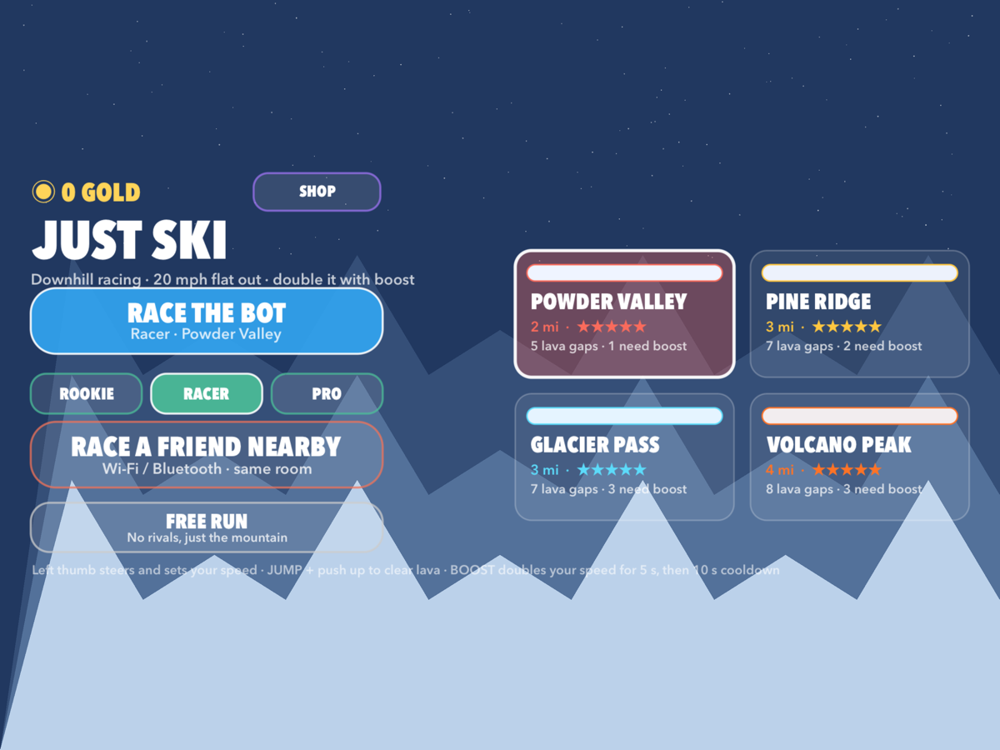

JustSki
First-person downhill racing. Four mountains. No adverts, no in-app purchases.
First-person downhill racing. Four mountains. No adverts, no in-app purchases.
You are on the skis, not watching them from behind. Your tips, the piste, and whatever is coming at you — a rock, a snowman, a crack in the mountain with lava at the bottom of it. Steer with your left thumb, and the further you push the faster you go. Jump, boost and brake sit under your right hand.


Every run is built from a seed, so a mountain is the same for you and for whoever you race — but no two mountains ski alike. The higher difficulties narrow the piste, break the slope apart and put more in your way.
| Mountain | What it is |
|---|---|
| Powder Valley | A wide open bowl. Room to learn where the brake is. |
| Pine Ridge | Trees tight to the edges and a piste that rolls under you. |
| Glacier Pass | Ice, so the skis answer late. Ice boulders to go round. |
| Volcano Peak | Four miles, cracked open. Jump or burn. |
Press JUMP and push your thumb upward. Not far enough up and you go in.
Sometimes the mountain simply stops and starts again further down. Carry speed into it.
They come down the hill aimed at where you are going, not where you are.
There is nothing holding you on. Off the side is a long way down.
Sail over a rock and it is 2 gold. A snowman or an ice boulder, 5. Finish a free run, 100; beat your own best time, 150; beat everyone you raced, 200. Gold you have collected stays collected, whether or not you make it to the bottom.
Spend it in the ski shop on suits, on skis, and on tricks you can throw off a jump.


Pick Race a Friend Nearby and the app looks for other iPhones and iPads running JustSki on the same Wi-Fi or over Bluetooth. It is direct between the devices — there is no server, no account and no sign-in anywhere in the game. It is also entirely optional; every other part works on its own.
| Requirement | |
|---|---|
| iOS / iPadOS | 17.0 or later |
| Devices | iPhone and iPad |
| Orientation | Landscape |
| Price | No adverts, no in-app purchases, no subscriptions. |
| Data collected | None. See the privacy policy. |